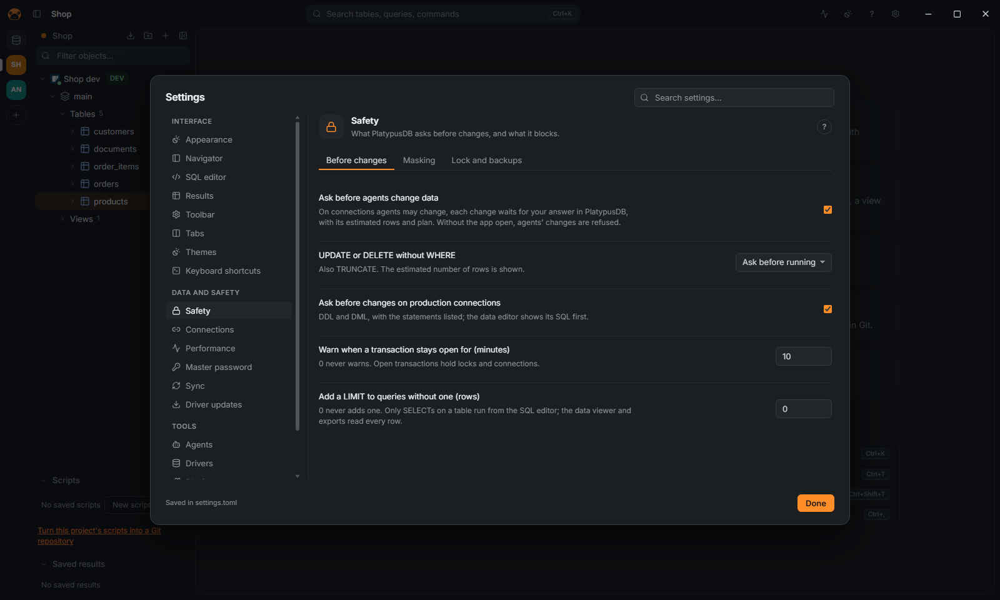

Trabalhar com segurança: produção, somente leitura, confirmações, mascaramento
Tudo o que está aqui também está em FEATURES.md.

Marcar uma conexão como produção
- Edite a conexão e abra a página Aparência e segurança.
- Defina o ambiente como Produção (as outras opções são Desenvolvimento e Teste). A produção pergunta antes das alterações e começa em commit manual.
- Se quiser, escolha uma cor, para distinguir a conexão com facilidade.
A partir daí, toda alteração nessa conexão é listada em uma caixa de diálogo intitulada "Alterações em <name> (produção)", com as instruções, e só é executada depois que você confirma. Configurações (Ctrl+,) › Segurança › Perguntar antes de alterações em conexões de produção desativa isso para o app. Os agentes nunca passam de somente leitura em uma conexão de produção.
Tornar uma conexão somente leitura
- Na mesma página, marque Somente leitura (recusa alterações nos dados).
- Uma instrução que pode modificar dados não é executada. O editor mostra "
<name>é somente leitura e isto pode alterar dados." sem nenhuma forma de contornar. O mesmo vale para o Explain com analyze ("<name>é somente leitura e esta instrução pode alterar dados."), um arquivo incluído com@include, uma célula de notebook ("<name>é somente leitura: esta célula pode alterar dados."), o cliente de linha de comando e uma execução em várias conexões, que lista a conexão como ignorada ("Conexão somente leitura"). - Não são oferecidos de forma alguma: Importar dados…, Importar dados para uma nova tabela…, Colar CSV como nova tabela…, Gerar dados…, Executar arquivo SQL…, a criação de objetos, o salvamento no designer de tabelas e a edição de linhas na grade. Os agentes continuam somente leitura.
O botão de cadeado de uma aba do editor torna somente leitura apenas essa aba, sem alterar a conexão salva. Este é o único caso que pergunta: o editor mostra a mesma mensagem com um botão Executar mesmo assim, e o cliente de linha de comando pergunta "Run anyway?".
A mesma página tem mais duas caixas: Sem exportações (seus dados não vão para nenhum arquivo, outro banco de dados ou agente) e Sem edição de dados (as linhas mudam só por SQL, não na grade, em importações nem em dados gerados).
Confirmações
Configurações › Segurança › Antes das alterações:
- UPDATE ou DELETE sem WHERE (também
TRUNCATE): Perguntar antes de executar (o padrão), Nunca executar ou Executar sem perguntar. A caixa de diálogo pergunta "Alterar todas as linhas?" e diz aproximadamente quantas linhas. - Avisar quando uma transação ficar aberta por (minutos): 10 por padrão, 0 nunca avisa.
- Adicionar um LIMIT às consultas que não têm (linhas): 0 (o padrão) nunca adiciona.
- Perguntar antes que os agentes alterem dados: veja Agentes.
Desfazer uma alteração
Ativada por padrão, a opção Guardar as linhas que um UPDATE ou DELETE altera, para restaurá-las (Configurações › Segurança › Bloqueio e cópias) guarda as linhas de um UPDATE ou DELETE de uma só tabela, até 10.000, executado pelo editor. Abra o Registro de transações na barra de ferramentas do editor e clique em Restaurar…, ou execute Snapshots antes de alterações… na paleta de comandos, para obter o script que as devolve.
Mascarar dados sensíveis
- Pressione
Ctrl+Alt+M(ou execute Mascarar dados sensíveis na paleta de comandos): os valores das colunas sensíveis aparecem como pontos enquanto a tela é compartilhada. As cópias mantêm os valores reais. - Configurações › Segurança › Mascaramento define quais colunas são sensíveis, pelo nome (
*password*,*token*,*email*e outros por padrão;*vale por quaisquer caracteres) e pelo tipo. Você também pode marcar uma coluna na aba da tabela dela.
Os agentes também leem as colunas sensíveis mascaradas, a menos que você marque Mostrar aos agentes os valores das colunas sensíveis para essa conexão em Configurações › Agentes › Segurança. Um campo sensível dentro de um documento do MongoDB (user.password) também é mascarado. Quando um agente pergunta no que você está trabalhando, uma coluna lida com outro nome (SELECT email AS contact) também é mascarada; se a instrução a esconde atrás de uma subconsulta, o resultado compartilhado inteiro é mascarado.
Uma regra ou uma marca removida fora do app (um agente com ferramentas de arquivo editando settings.toml ou catalog.db) não chega aos agentes até você aceitar: o app pergunta, e Configurações › Agentes › Segurança a lista, com uma forma de aceitar ou desfazer. Uma regra adicionada fora do app vale na hora. Isso cobre edições desses arquivos e nada mais. Um agente que pode executar comandos como o seu usuário pode ler o banco de dados por outros caminhos, ou o chaveiro do sistema onde fica o selo: para manter os valores longe de um agente assim, execute-o como outro usuário e dê à conexão um usuário de banco de dados sem acesso a essas colunas.
Uma resposta vale para o que a pergunta listava: se os arquivos mudarem de novo enquanto ela está aberta, Accept não aceita nada e a lista é mostrada outra vez.
Bloquear o app
Com uma senha mestra definida (veja Conectar), Configurações › Segurança › Bloquear o app após estes minutos inativo (0, o padrão, nunca bloqueia) bloqueia o PlatypusDB e fecha as conexões de produção. Bloquear PlatypusDB na paleta de comandos o bloqueia na hora. Digite a senha mestra para desbloquear: as conexões de produção se reconectam quando são usadas.